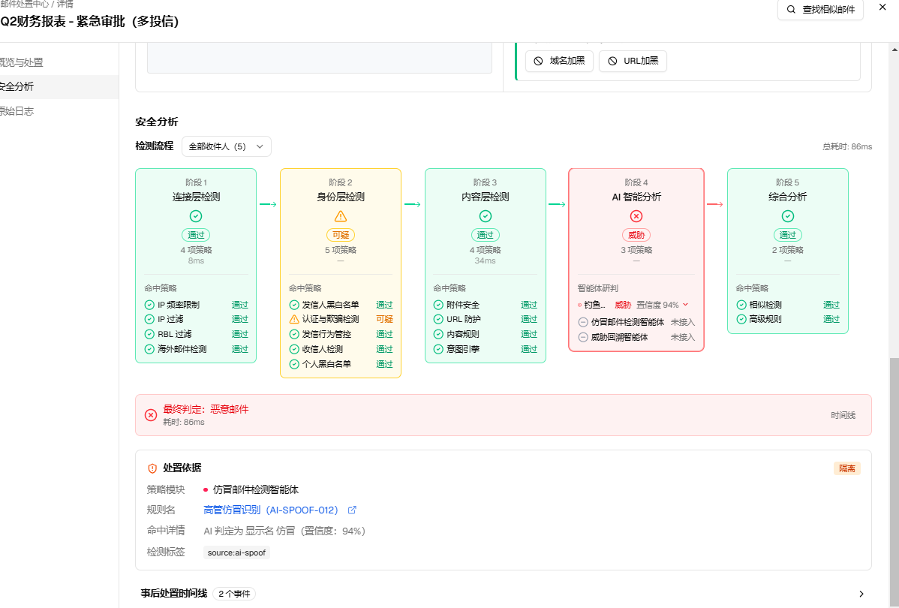
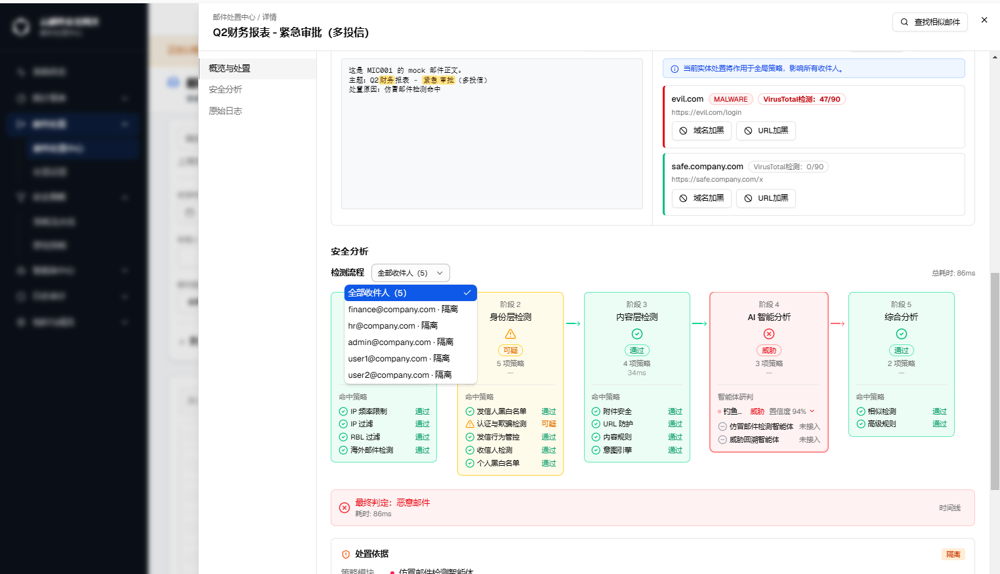

| 字段 | 内容 |
|---|---|
| 规格版本 | v1 |
| 生成日期 | 2026-08-16 |
| 页面路由 | /zh/email-disposal/center（详情侧边栏 · 安全分析标签） |
| webapp 源码 | src/components/email-disposal/ |
| webapp commit | 18088a7 |
| 需求依据 | 用户在本工单对话中提出的具体问题与确认 |
| 历史对话 | 已使用（阶段3/4/5检测项重新分配 + 钓鱼检测智能体行内嵌研判 + 四语言文案同步，均在当前会话内完成） |
| 对照 spec | not-used |
| 验证环境 | Mock 数据、zh locale、蓝色主题、桌面视口、AI-多租户形态、租户管理员视角 |
| 形态 \ 角色 | 平台管理员 | 租户管理员 |
|---|---|---|
| AI-单 | ✅ | ✅ |
| 传统-单 | ✅ | ✅ |
| 云-多 | ✅ | ✅ |
| AI-多 | ✅ | ✅ |
| 传统-多 | ✅ | ✅ |
邮件处置中心为全形态通用模块，各形态与角色下的可见性与可编辑性一致，无差异分支。
本需求聚焦"邮件处置中心"详情页"安全分析"标签下的两处调整：一是阶段3/4/5检测项的重新分配，使阶段4"AI 智能分析"不再展示系统内实际不存在的虚构检测项；二是将钓鱼检测智能体的完整研判明细从页面底部一个割裂的独立卡片，整合进阶段4对应列表项的内嵌展开区域。
背景：优化前，阶段4"AI 智能分析"列出 5 个检测项（发信人行为智能体、意图识别智能体、营销邮件智能体、钓鱼邮件检测智能体、回溯检测智能体），但系统内真正存在、且在【智能体中心】有对应管理入口的智能体只有 3 个：钓鱼检测智能体、仿冒检测智能体、威胁回溯智能体；其余"发信人行为智能体""意图识别智能体""营销邮件智能体"3 项从未接入任何真实判定逻辑，长期展示编造的固定结果。同时，"意图引擎"（真实存在于内容层规则命中检测中）被错放在阶段5"综合分析"，与阶段3"内容层检测"里同样命中逻辑的其余内容规则脱节。
方案：
aiCheckStatus）改为读取邮件真实的 phish_agent_check.risk_level 字段判定钓鱼检测智能体状态（通过/可疑/威胁）；仿冒检测智能体、威胁回溯智能体当前无对应真实数据源，诚实返回"未接入"（灰色减号态），不再编造判定结果。

| 元素 | 类型 | 说明 | i18n key |
|---|---|---|---|
| 阶段4标题 | 文本 | "AI 智能分析" | emailDisposal.detail.analysis.stages.ai.title（沿用既有 key，未变更） |
| 钓鱼检测智能体行 | 列表项，可展开 | 状态取自 phish_agent_check.risk_level：none → 通过（绿色勾）；low/medium → 可疑（黄色）；high → 威胁（红色） | emailDisposal.detail.analysis.check.phishingAgent |
| 仿冒检测智能体行 | 列表项，不可展开 | 恒为"未接入"（灰色减号），因当前无对应真实数据源 | emailDisposal.detail.analysis.check.spoofingAgent |
| 威胁回溯智能体行 | 列表项，不可展开 | 恒为"未接入"（灰色减号），因当前无对应真实数据源 | emailDisposal.detail.analysis.check.threatRetroAgent |
| 阶段3"意图引擎"检测项 | 列表项 | 新增，展示内容规则命中态（通过/可疑/命中），与阶段3其余内容规则并列 | emailDisposal.detail.analysis.check.intentEngine（沿用既有 key，位置迁移） |
src/components/email-disposal/hooks/use-detection-stages.ts — 阶段3/4/5检测项数组重新分配；aiCheckStatus 判定逻辑改为读取 phish_agent_check.risk_level，其余两个智能体返回 skipped。src/components/email-disposal/hooks/use-detection-stages.test.ts — 同步更新受影响断言。tests/unit/detection-stages.test.ts — 同步更新受影响断言。use-detection-stages.test.ts、detection-stages.test.ts 等相关测试文件合计 1879 项全部通过。tsc --noEmit：涉及文件零新增错误。背景：优化前，页面底部存在一个独立的紫色"AI 智能研判"卡片（标题"AI 智能研判"，含"查看详情/收起详情"切换按钮），单独展示 AI 判定结论、风险等级、置信度、威胁溯源时间线、处置建议等信息，与阶段4的钓鱼检测智能体列表项是两处割裂的入口，用户需要在同一页面上下滚动才能把二者关联起来。
方案：将原独立紫色卡片的全部研判明细（结论/风险等级/置信度/威胁溯源时间线/处置建议）内嵌折叠进阶段4"钓鱼检测智能体"这一行——点击该行展开后，直接在列表项下方显示完整明细，配色从紫色系统一改为中性色系（与阶段4其余中性态列表项视觉一致，不再额外引入第4种类别色）。原独立卡片、其触发按钮及"暂无数据"占位文案（aiVerdict.title/viewDetails/hideDetails/noAiData 等 i18n key）整体移除。
src/components/email-disposal/sections/analysis-section.tsx — 移除独立"AI 智能研判"卡片及其触发状态；钓鱼检测智能体行改为可展开，内嵌原卡片明细内容。messages/zh.json、messages/en.json、messages/ru.json、messages/th.json — emailDisposal.detail.analysis.check 命名空间收窄为3个真实智能体键；aiVerdict 命名空间移除 title/viewDetails/hideDetails/threat.*，移除顶层 noAiData。tests/unit/email-disposal-detail-i18n-parity.test.ts — 同步更新 STRING_PATHS 断言清单。analysis-section.test.tsx、email-disposal-detail-i18n-parity.test.ts 等相关测试文件合计 1879 项全部通过。tsc --noEmit：涉及文件零新增错误。� 乱码残留（zh.json/th.json/ru.json 中其他既有历史遗留乱码不在本次改动范围内，未处理）。aiVerdict 命名空间下 title/viewDetails/hideDetails/threat.high/threat.medium/threat.low/threat.none、以及顶层 noAiData 共 8 个 i18n key 已删除，若有其他代码路径引用需同步检查（本次改动范围内已确认无遗留引用）。| 编号 | 内容 | 状态 |
|---|---|---|
| D-001 | 页面底部不再存在独立"AI 智能研判"紫色卡片，研判明细改为内嵌于阶段4钓鱼检测智能体行，需点击展开查看（见变更2）。 | 已变更 |
| D-002 | 阶段4"AI 智能分析"检测项数量由5项收窄为3项，移除的3个虚构智能体（发信人行为/意图识别/营销邮件）不再出现在该阶段任何形态与角色下（见变更1）。 | 已移除 |
| D-003 | 阶段3"内容层检测"新增"意图引擎"检测项，阶段5"综合分析"对应移除同一检测项（见变更1）。 | 已变更 |
| 编号 | 内容 | 状态 |
|---|---|---|
| Q-001 | 仿冒检测智能体、威胁回溯智能体当前均无真实数据源，页面展示"未接入"；这两个智能体后续是否会在【智能体中心】补齐对应的邮件级判定字段（类似 phish_agent_check），需要与后端/产品确认排期。 | 未解决 |
| 版本 | 生成日期 | webapp commit | 摘要 |
|---|---|---|---|
| v1 | 2026-08-16 | 18088a7 | 初始生成：新建 GT-12970.html，收录 GT-12936 群发邮件：安全分析模块（阶段3/4/5检测项重新分配为真实智能体 + 钓鱼检测智能体行内嵌研判详情）。 |